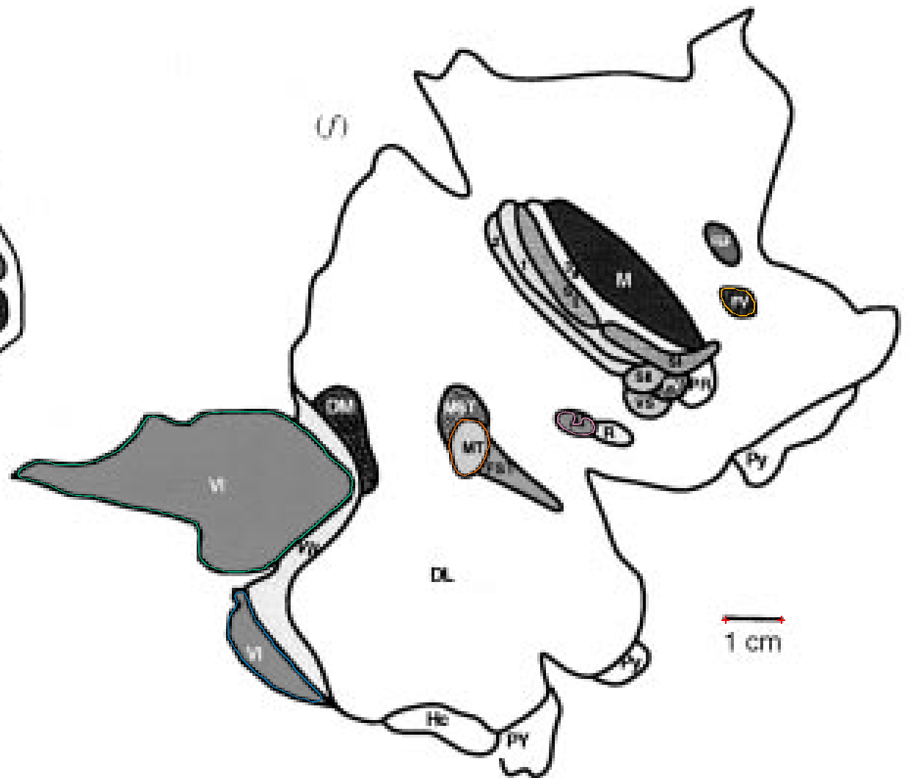
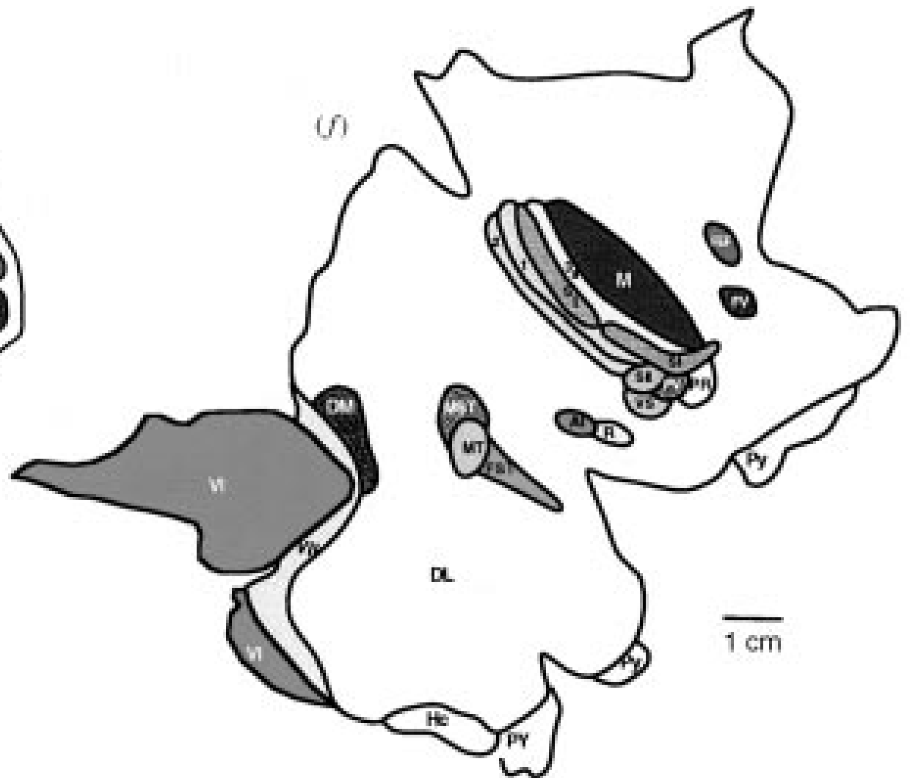

fig14F_summary
Added FEF, R, M, FST. Remaining field limits are recorded individually in the canonical unmeasured entries.
Editable ImageJ ROIs · Canonical geometry


Source and remaining limits

- SI: 2026-10-20 reassessment: Several narrow adjoining somatosensory strips meet at the lower junction; their tiny overprinted identifiers and merged end segments do not establish each full SI perimeter.
- VII: Thin VI/VII/DL junction is not resolved as a closed complete compartment in this reduced comparative print. No enclosing cortex area substituted.
- DM: 2026-10-20 reassessment: The taper of DM meets the narrow VI/VII junction in merged thick ink; its lower endpoint cannot be isolated reliably in this print.
- MST: 2026-10-20 reassessment: The gray cap above MT has an obscured MT/MST junction at its narrow lateral tip; no independent cap area added without resolving the shared edge.
- SII: 2026-10-20 reassessment: The small ventral somatosensory cluster has merged heavy boundary junctions; separate SII outline not uniquely established.
- PV: 2026-10-20 reassessment: The small ventral somatosensory cluster has merged heavy boundary junctions; separate PV outline not uniquely established.
- VS: 2026-10-20 reassessment: The small ventral somatosensory cluster has merged heavy boundary junctions; separate VS outline not uniquely established.